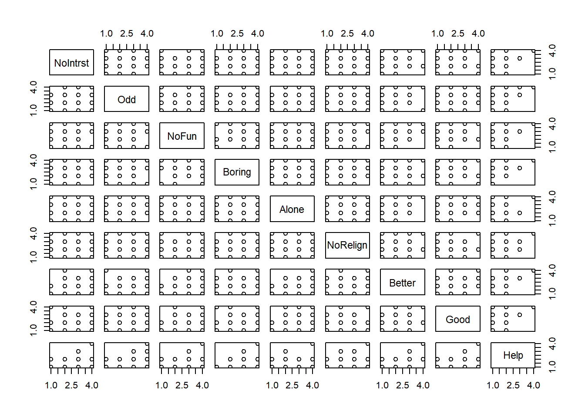
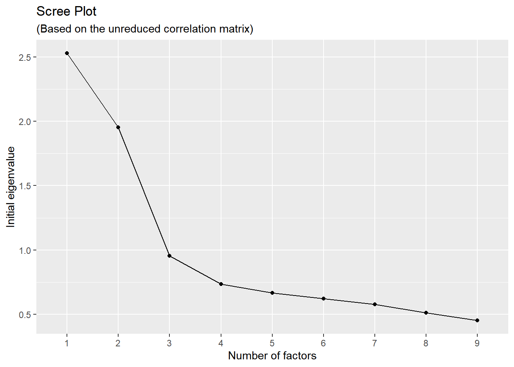
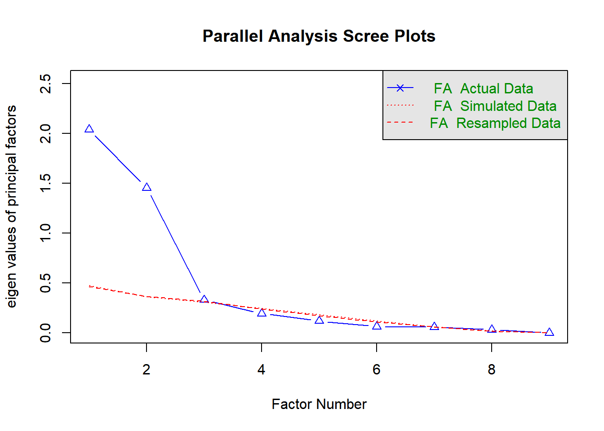
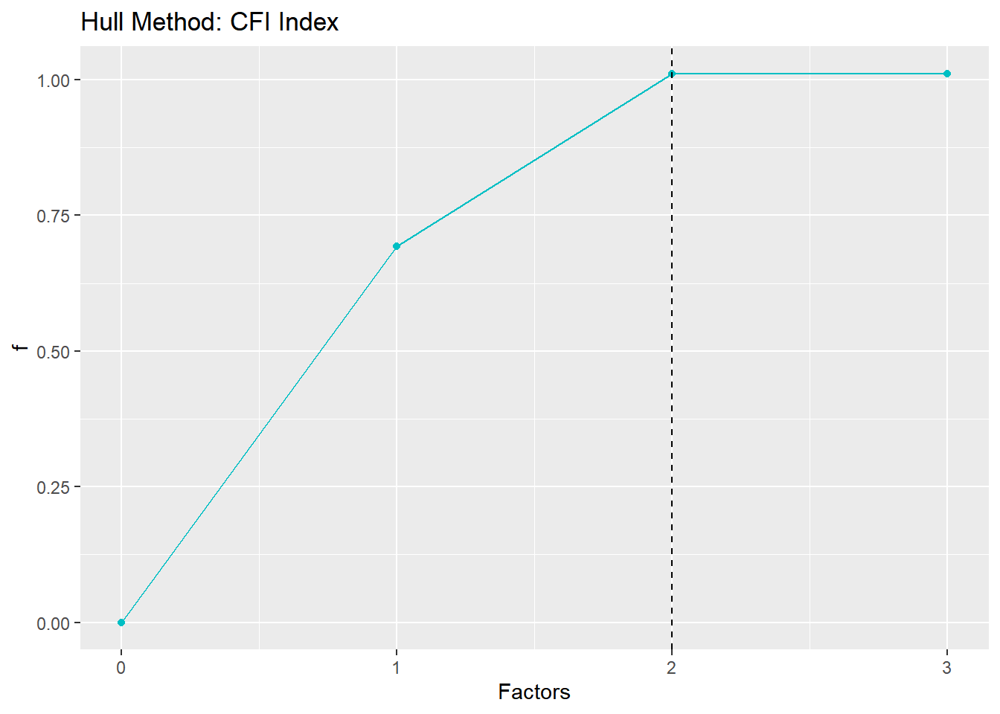
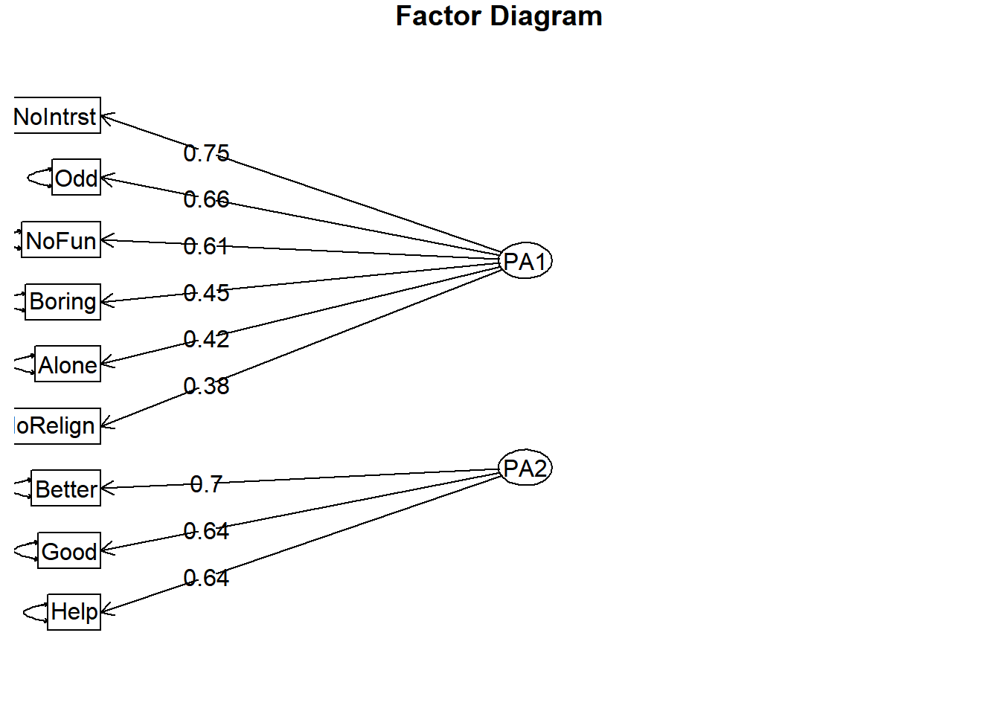

8 Week 07: Exploratory Factor Analysis, Part 1
8.1 Introductory comments
In this handout, we will do the following:
- Carry out the preparatory steps to factor analysis
- Conduct a factor analysis with raw data and examine the output
- conduct a factor analysis on correlation data
8.1.1 Packages
In this handout, we will use several packages.
library(tidyverse)
library(psych)
library(car)
library(mvnormtest)
library(nFactors)
library(EFA.MRFA)As is often the case with other operations in the R world, there exist different packages and functions for performing exploratory factor analysis (EFA). According to a review by Luo and colleagues (2019), the most frequently used and comprehensive package for EFA appears to be the psych package (Revelle 2025). Its fa() function can be used with raw data as well as with correlation or covariance matrices. The function looks like this:
- The first argument, which can replace the
r =, is for the data, whether it be a data frame of the raw data or a correlation or covariance matrix. - The
nfactors =argument has as its default 1 but we should determine this number based on our preparatory steps, which we’ll do. - The
n.obs =is required if we use a correlation or covariance matrix instead of raw data. If we use raw data, we exclude this argument. - The
fm =argument is for the factor method. There are several options described in the help file. Two common ones arefm = "pa"for the principal axis method of factor extraction, andfm = "ml"for maximum likelihood method of extraction, but others are available such as minimum residual solution, which is the default in this package. - The
rotate =argument is for specifying the rotation method. There are several options listed in the help file, includingrotate = "none", which we can use in our preparatory steps, as well asrotate = "promax","oblimin", and others for oblique rotations, which are frequently used if we assume that the constructs underlying the factors are related, as is often the case with studies in the social sciences. There are orthogonal rotations as well, including"varimax"and"quartimax", and so forth. These are appropriate if we assume that the correlations between the factors should be zero.
As usual, we can look in the help files to find other available arguments and options. In the examples in this handout, we will use promax rotation because we will assume that the constructs underlying the factors are related (though we may find evidence suggesting otherwise). We will also use principal axis factoring.
8.1.2 EFA \(\ne\) PCA
Principal axis factoring (and any other EFA method) is not to be confused with principal components analysis (PCA), which strictly speaking is not a type of common factor analysis because it generates components rather than factors. Unlike factors, components include the unique variances of the observed variables. This is similar to how we calculate composite scores (on say a classroom test) by using a weighted sum of the variables—PCA finds the best possible weighted sum to explain the variance, including the error variance, in the set of data. PCA is appropriate when we are not interested in an underlying mental construct that explains the observed variables. When we assume that the factors do represent latent traits, common factor analysis is more appropriate than PCA because when we deal with factors, we assume that the factor is what is causing the observed scores to be high or low.
8.2 Preparatory steps
Here are some preparatory steps we should consider before jumping into a factor analysis.
- Examine the data and the correlations
- Address statistical assumptions
- Determine the factorability of the data using the KMO and Bartlett tests
- Identify the number of factors to retain for the factor analysis
8.2.1 Examining the data
Let’s import the data. This is a raw data set (rather than a covariance or correlation matrix), so each row represents a person. These data are described in the chapter. We have eight variables, each on a four-point Likert-type scale.
Terms used to refer to the observed variables. In this handout, we call the observed variables items because they’re items on a survey. We can also call them subtests because items are smaller parts of a bigger test or survey.
## PID NoIntrst Odd NoFun Boring Alone NoRelign Better Good Help
## 1 S0001 3 3 3 4 3 4 1 1 1
## 2 S0002 3 2 3 4 3 2 1 2 1
## 3 S0003 2 2 3 2 3 2 2 2 2
## 4 S0004 2 3 3 3 1 3 2 2 2
## 5 S0005 2 3 3 3 1 3 2 1 1
## 6 S0006 2 3 2 4 3 3 1 2 1We can also isolate our data frame to include only the columns with the observed data. In our data frame, we have an ID variable, PID, in the first column. So, we can use a -1 in the column index to remove the first column and save our data to a new object, dat.
## NoIntrst Odd NoFun Boring Alone NoRelign Better Good Help
## 1 3 3 3 4 3 4 1 1 1
## 2 3 2 3 4 3 2 1 2 1
## 3 2 2 3 2 3 2 2 2 2
## 4 2 3 3 3 1 3 2 2 2
## 5 2 3 3 3 1 3 2 1 1
## 6 2 3 2 4 3 3 1 2 18.2.1.1 Descriptive statistics
Let’s look at the descriptive statistics using describe() from the psych package. We can see our usual descriptive statistics. It seems as though all of our variables are on similar scales, from 1 to 4, with the medians being integers, which makes sense because these are from Likert-type-scale items. Each has a skew and kurtosis within the -2 to +2 range.
| n | M | sd | Med | Min | Max | Skew | Kurtosis | seM | |
|---|---|---|---|---|---|---|---|---|---|
| NoIntrst | 371 | 2.67 | 0.64 | 3 | 1 | 4 | -0.39 | 0.16 | 0.03 |
| Odd | 371 | 2.67 | 0.68 | 3 | 1 | 4 | -0.47 | 0.19 | 0.04 |
| NoFun | 371 | 2.83 | 0.64 | 3 | 1 | 4 | -0.53 | 0.79 | 0.03 |
| Boring | 371 | 2.96 | 0.60 | 3 | 1 | 4 | -0.37 | 0.98 | 0.03 |
| Alone | 371 | 2.85 | 0.67 | 3 | 1 | 4 | -0.70 | 1.08 | 0.03 |
| NoRelign | 371 | 2.61 | 0.69 | 3 | 1 | 4 | -0.39 | 0.00 | 0.04 |
| Better | 371 | 1.90 | 0.51 | 2 | 1 | 4 | 0.09 | 1.71 | 0.03 |
| Good | 371 | 1.85 | 0.52 | 2 | 1 | 4 | 0.17 | 1.97 | 0.03 |
| Help | 371 | 1.76 | 0.46 | 2 | 1 | 4 | -0.61 | 0.74 | 0.02 |
8.2.1.1.1 Correlation matrix
We should take a look at the correlations among our variables to determine if factor analysis is appropriate. We expect at least some of these to differ from zero. Also, if there are any correlations that are unexpectedly very high in magnitude, such as close to 1 or -1, the two variables may be too collinear, indicating that they are potentially redundant and that we may seek to remove one or combine them. If we are writing a report, we might report this matrix in an appendix. Matrices like this allow future researchers to perform factor analyses on our correlation data if they wish to confirm the results with different model specifications or software.
We can also tentatively eyeball the correlations and see if they make sense given the theory (if one exists) or our general understanding of how we would expect the subtest scores to relate to one another in our population.
Here is the prettified correlation matrix from these data.36| NoIntrst | Odd | NoFun | Boring | Alone | NoRelign | Better | Good | Help | |
|---|---|---|---|---|---|---|---|---|---|
| NoIntrst | 1 | ||||||||
| Odd | .504 | 1 | |||||||
| NoFun | .454 | .388 | 1 | ||||||
| Boring | .286 | .303 | .261 | 1 | |||||
| Alone | .351 | .216 | .260 | .252 | 1 | ||||
| NoRelign | .292 | .311 | .264 | .090 | .096 | 1 | |||
| Better | .123 | .138 | .113 | -.136 | .076 | .067 | 1 | ||
| Good | .049 | .029 | .046 | -.131 | .031 | .051 | .470 | 1 | |
| Help | .006 | .027 | .007 | -.231 | -.010 | .046 | .425 | .402 | 1 |
8.2.2 Addressing assumptions
The assumptions for factor analysis are, not surprisingly, linearity and multivariate normality, along with absence of outliers (Tabachnick and Fidell 2013).37 Linearity, outliers, and multivariate normality can all have an effect on the Pearson correlations that are analyzed and used in estimating the factor-analysis model. If these assumptions are not met, the legitimacy of our factor-analysis results can come into question.
We should also examine whether there is multicollinearity among the variables. Unlike PCA, which is actually one solution for dealing with multicollinearity, EFA will not arrive at a stable solution if there is extreme multicollinearity in the model. This is because it uses matrix inversion, which uses the determinant of the correlation matrix. If that determinant of the correlation matrix is zero or very close to zero, it’s like balancing a mountain on a pin-needle fulcrum.
8.2.2.1 Linearity
Linearity is perhaps the most salient assumption. The assumption is that the correlations among the observed variables and factors are linear. Non-linear relationships can result in misspecified correlations and therefore a misspecified factor-analysis model. We might consider examining scatter plots of all pairs of the observed variables. The Base R plot() function on the set of variables provides all possible bivariate scatterplots.

Because each of these dependent variables (which we’re calling subtests or items because they’re items in a survey) is on an ordinal scale with four points, it is difficult to tell if there are nonlinear relationships. Among the nine variables, it seems that Help might have some nonlinear relations with the other variables but it is hard to tell because of the ordinal nature of the data.
Note that with ordinal data having so few used points on the scale (in this case a maximum of four per variable), a garden-variety factor analysis will not be appropriate—we’ll practice dealing with that in the second part of our factor-analysis journey.
This brings up an important point: Linearity rests on the assumption that the observed variables are continuous; that is, that our data are on interval- or ratio-level scales. Categorical and ordered categorical data are not well suited to factor analysis. Generally, if our data have fewer than five functioning categories, we have a hard time claiming that our data are continuous.38
8.2.2.2 Outliers and multivariate normality
If we do a complete analysis, we should examine both univariate and multivariate outliers. For the univariate outliers, we can use standardized scores as was done in previous lessons or box-and-whisker plots. For now, let’s focus on the multivariate outliers, as these are often overlooked in research.
Let’s examine the Mahalanobis distances to see if we can identify outliers and examine multivariate normality:
varbs <- cbind(dat) # Note that in our data, we're using all of the columns
distances <- mahalanobis(varbs,
center = colMeans(varbs),
cov = cov(varbs))
raw$distances <- distances
# Let's keep a record of those who exceed the p < .001 criterion, if any:
raw$p <- pchisq(distances,
df = (ncol(varbs)-1), # df is number of variables - 1
lower.tail = FALSE)We can see which cases in our data set are flagged as outliers. I think Base R is better here than tidyverse.
# Let's use Base R to save a column that indicates whether the case is an outlier.
raw$outlier <- ifelse(raw$p < .001, 1, 0)
# Let's print those rows for which their outlier status is true:
out.liars <- raw[raw$outlier == 1, c("PID", "distances", "p", "outlier")]
out.liars## PID distances p outlier
## 50 S0050 33.71409 4.576934e-05 1
## 64 S0064 35.36739 2.291685e-05 1
## 66 S0066 31.44294 1.171502e-04 1
## 79 S0079 29.36322 2.737579e-04 1
## 117 S0117 26.48447 8.674130e-04 1
## 124 S0124 29.33548 2.768522e-04 1
## 126 S0126 27.76881 5.202634e-04 1
## 136 S0136 42.43203 1.123463e-06 1
## 160 S0160 28.47775 3.914343e-04 1
## 181 S0181 37.24053 1.039369e-05 1
## 201 S0201 29.42374 2.671253e-04 1
## 248 S0248 43.53517 6.963654e-07 1
## 310 S0310 30.77297 1.541915e-04 1
## 322 S0322 26.71397 7.920251e-04 1
## 328 S0328 57.08836 1.730643e-09 1
## 331 S0331 38.88572 5.161244e-06 1
## 348 S0348 28.77977 3.465846e-04 1There are 17 multivariate outliers.
For convenience, we can sort those rows by their distances to see who are the most extreme outliers.39
## PID distances p outlier
## 1 S0328 57.08836 1.730643e-09 1
## 2 S0248 43.53517 6.963654e-07 1
## 3 S0136 42.43203 1.123463e-06 1
## 4 S0331 38.88572 5.161244e-06 1
## 5 S0181 37.24053 1.039369e-05 1
## 6 S0064 35.36739 2.291685e-05 1
## 7 S0050 33.71409 4.576934e-05 1
## 8 S0066 31.44294 1.171502e-04 1
## 9 S0310 30.77297 1.541915e-04 1
## 10 S0201 29.42374 2.671253e-04 1
## 11 S0079 29.36322 2.737579e-04 1
## 12 S0124 29.33548 2.768522e-04 1
## 13 S0348 28.77977 3.465846e-04 1
## 14 S0160 28.47775 3.914343e-04 1
## 15 S0126 27.76881 5.202634e-04 1
## 16 S0322 26.71397 7.920251e-04 1
## 17 S0117 26.48447 8.674130e-04 1It seems like Person S0328 is the biggest outlier, S0248 is the second most outlying case, and so forth.
Let’s examine the multivariate Q-Q plot based on the Mahalanobis distances:40
car::qqPlot(distances,
distribution = "chisq", df = mean(distances),
lwd = 1,
grid = FALSE,
main = "Multi-normal Q-Q Plot",
xlab = expression(chi^2 * " quantiles"),
ylab = expression("Mahalanobis distances "^2))
## [1] 328 248If we are expected to also report a statistical test of normality, we can use the mulitvariate Shapiro-Wilk test that we used in Week 3. The mshapiro.test() function from the mvnormtest package (Jarek 2024). This function requires the data be arranged as rows instead of columns, so we’ll use the transpose function, t() within the test.
##
## Shapiro-Wilk normality test
##
## data: Z
## W = 0.92551, p-value = 1.251e-12We see results that are consistent with our outliers and Mahalanobis distance Q-Q plot. The Shapiro-Wilk normality test (W = 0.93, p = < .01) suggests the data are statistically significantly different from a normal distribution. This collection of evidence suggests that the multivariate normality assumption was not met.
8.2.2.2.1 What can we do
We have some multivariate outliers. If our objective is to obtain a factor model to serve as evidence in appraising the validity of our score interpretations with this instrument as it is used with the broader population, we might opt to remove these observations before fitting the factor-analysis model. Some scholars may insist we retain outlying observations because they are indeed members of the population; nonetheless, they can have stronger effects on the model estimates than their non-outlying counterparts. On the other hand, if we intend to use the EFA to estimate these observations’ scores, we have little choice but to leave them in the data. Alternatively, we could take a sensitivity-analysis approach by comparing the results of two factor-analysis models, one with these cases removed and one with them included. If the results are arguably similar—such that we reach the same conclusions about the internal structure—we might then decide to retain our outliers as we could then report the results with greater confidence. Whatever our decision is, we should document what we have done. If we retain these outliers and do not perform that sensitivity analysis, we should report that the results of our factor analysis need to be taken with caution.
Because our data are not normally distributed, we should avoid using maximum likelihood as the factor extraction method. Furthermore, we should report that our data are not likely normally distributed but that we proceeded with the factor analysis anyway. We could also offer a qualification such as “to the extent that normality fails, the solution is degraded but may still be worthwhile” (Tabachnick and Fidell 2013, 618).
8.2.2.3 Absence of perfect multicollinearity
If we’re examining a correlation matrix and find two variables correlate very strongly, such as r = .97, this suggests there is some degree of mutlicollinearity. However, we should also consider that multicollinearity can go unnoticed in an eyeballing of the correlation matrix because it can be among combinations of variables. We can go back to our earlier studies in multiple regression and examine the squared multiple correlation (SMC) of each variable when we regress it on all the other variables. We can also examine the variance inflation factor (VIF), which is calculated from the SMC. With the SMC, if we find an SMC greater than .90 or .95, we have diagnosed multicollinearity. With VIF > 10, which corresponds to an SMC of .90, we can also flag multicollinearity.
For EFA, the computational issue has to do with whether we can estimate a factor-analytic structure from the data. If we have perfect multicollinearity in our data set, we will have what is called a singular matrix and a determinant of zero. In that case, we cannot trust the results of the EFA model.
With this, an easy way to assess whether there is perfect multicollinearity is to calculate the determinant of the correlation matrix. If that is zero, we have perfect multicollinearity. If it is very close to zero, we should take a look at our data and consider asking why this multicollinearity is present. Let’s use the det() function:
## [1] 0.1918348The determinant of the correlation matrix is positive and not very close to zero, so we’re in good shape. We can report something like “We calculated the determinant of the correlation matrix and found it to be positive, suggesting that there will not be problems in estimating the EFA model due to perfect multicollinearity.”
If there is perfect multicollinearity, we should remove the variable that is perfectly linearly related with the others, as it is redundant. When strong multicollinearity is present, we have to use our judgment to determine whether the redundant variable(s) are legitimate for our theory or expectations about the data. If we find strong multicollinearity and we want to avoid their overrepresentation in the EFA mdoel, we can replace the set of multicollinear varaibles with a composite of them. For example, if we have three variables that are multicollinear, we can fit a PCA on those three variables and save each observation’s component score, then use that component score in our EFA model.
What’s it look like when multicollinearity is present?
To demonstrate what the determinant and EFA results would look like if we had perfect multicollinearity, let’s create a temporary data frame, bad, and create a new variable, GoodHelp that is a linear transformation of two of the existing variables (Good and Help), and calculate the determinant of that correlation matrix.
Notice that we might not observe this perfect multicollinearity in the correlation matrix. Our new variable correlates .81 and .86 with the two variables from which we created it.
## Good Help GoodHelp
## Good 1.00 0.40 0.86
## Help 0.40 1.00 0.81
## GoodHelp 0.86 0.81 1.00However, the determinant is zero:
## [1] 0If we fit an EFA model, we’ll get errors that say the matrix was not positive definite or that the correlation matrix was singular. Let’s try this and see what happens:
## In smc, smcs < 0 were set to .0
## In smc, smcs < 0 were set to .0
## In smc, smcs < 0 were set to .0## In factor.scores, the correlation matrix is singular, the pseudo inverse is usedNotice the warnings that the matrix was not positive definite or that the correlation matrix was singular. When we conduct an EFA (or CFA) and we have those kinds of messages, we should not trust the results.
Sometimes, multicollinearity can go unnoticed if we only rely on the EFA output. Here, let’s again create a second version of our multicollinear variable, but this time make GoodHelp have extreme collinearity instead of perfect collinearity.
# This is just for demonstration
bad <- dat
set.seed(1122)
# Creating a tiny random number for each row of the data frame:
tiny.rand.num <- rnorm(nrow(bad), 0, .005)
# Creating a variable with very strong, but not perfect, collinearity:
bad$GoodHelp <-(bad$Help * .5) + (bad$Good * .5) + tiny.rand.num
Rbad <- cor(bad)
det(Rbad)## [1] 2.930893e-05The determinant is very small. If this is the denominator of a fraction (e.g., when we take the inverse of a matrix), the result will be a very big number.
If we conducted EFA on this output, we might not see the error but we will notice that the collinear variable and the two from which it came seem to overrepresent the first factor. This can result in a biased interpretation of what that factors mean; we would need to examine our theory of how we expect these items (or subtests) to be related to each other in our decision about how to deal with this strong multicollinearity. If we can remove the redundant variable, we should.
##
## Loadings:
## MR1 MR2 MR3 MR4 MR5 MR6 MR7 MR8 MR9 MR10
## NoIntrst 0.130 0.749 -0.191 -0.239 0.135 -0.238
## Odd 0.130 0.726 -0.163 0.385 -0.212 -0.154 0.104
## NoFun 0.115 0.643 -0.275 0.233 -0.330
## Boring -0.225 0.562 0.411 0.424 0.186 0.180
## Alone 0.430 0.119 0.109 0.173 -0.237 -0.111 0.169 0.279
## NoRelign 0.119 0.413 -0.230 -0.204 -0.321 0.274 0.263
## Better 0.663 -0.219 0.504 0.174 0.161
## Good 0.829 0.469 -0.211 -0.193
## Help 0.800 -0.137 -0.381 0.436
## GoodHelp 0.973 -0.111 0.110 -0.132
##
## MR1 MR2 MR3 MR4 MR5 MR6 MR7 MR8 MR9 MR10
## SS loadings 2.830 2.213 0.643 0.538 0.449 0.385 0.306 0.258 0.153 0.000
## Proportion Var 0.283 0.221 0.064 0.054 0.045 0.038 0.031 0.026 0.015 0.000
## Cumulative Var 0.283 0.504 0.569 0.622 0.667 0.706 0.736 0.762 0.778 0.778If we need to report the VIF
If our reviewers demand we report the variance inflation factors, we can use the vif() function from the car package (Fox, Weisberg, and Price 2024). However, this approach assumes we have a regression model or an ANOVA, whereas in EFA, we merely have a bunch of observed variables. A workaround is to use a meaningless numeric variable, such as ID number or case number, on the set of variables and then use the vif() function on that model output. Those variables that exceed 10 are flagged as multicollinear—in our temporary, bad, data set, the last three variables clearly exceed this:
bad$casenum <- 1:nrow(bad)
lm.for.vif <- lm(casenum ~ NoIntrst + Odd + NoFun + Boring + Alone + NoRelign + Better + Good + Help + GoodHelp, data = bad)
car::vif( lm.for.vif)## NoIntrst Odd NoFun Boring Alone NoRelign Better Good
## 1.635752 1.509177 1.375369 1.278744 1.190307 1.160450 1.464816 2638.768269
## Help GoodHelp
## 2047.808400 6545.267350Back to our actual data, without the GoodHelp variable, none of our variables exceeds this VIF > 10 criterion, so we can conclude that multicollinearity is not a problem:
raw$casenum <- 1:nrow(raw)
lm.for.vif <- lm(casenum ~ NoIntrst + Odd + NoFun + Boring + Alone + NoRelign + Better + Good + Help, data = raw)
car::vif( lm.for.vif)## NoIntrst Odd NoFun Boring Alone NoRelign Better Good Help
## 1.630878 1.508602 1.374342 1.276896 1.190307 1.159588 1.457194 1.374892 1.3497308.2.3 Determining factorability
The Kaiser-Meyer-Olkin (KMO) statistic predicts if data are likely to factor well given the correlations and partial correlations. The statistic, ranging from 0 to 1, roughly estimates the proportion of variance in the data that might be explained by factors. If we use Kaiser’s (1974) guidelines, a suggested cutoff for determining factorability of the sample data is \(\text{KMO} \geq .60\).
## Kaiser-Meyer-Olkin factor adequacy
## Call: psych::KMO(r = dat)
## Overall MSA = 0.75
## MSA for each item =
## NoIntrst Odd NoFun Boring Alone NoRelign Better Good Help
## 0.76 0.76 0.82 0.77 0.79 0.81 0.68 0.68 0.71The total KMO is 0.75, indicating that, based on this test, we can probably conduct a factor analysis.
With the Bartlett’s sphericity test, the null hypothesis is that the correlation matrix of the sample data comes from a population in which the variables have zero correlations with each other. In other words, the correlation matrix in the population is an identity matrix. Since we do need a set of correlated variables to perform a factor analysis, we want H0 to be rejected.
## $chisq
## [1] 604.5854
##
## $p.value
## [1] 2.276163e-104
##
## $df
## [1] 36The test suggests we can reject the null hypothesis that the data are not collinear. This is no surprise to us if we saw in our correlation matrix that there are at least some moderate correlations in our data. Nonetheless, given this and the results of the KMO test, we can proceed with factor analysis.
8.2.4 Determining how many factors to retain
It is important to use multiple methods to determine how many factors to retain. Some researchers (not I) use the eigenvalue-greater-than-one approach, also called the K1 criterion named after the Kaiser’s (1974) work, to determining the number of factors to retain. It is important to note that this method was developed for principal components analysis rather than factor analysis. If you do use that approach, interpret the results with caution. It is a good idea to accompany that method with at least one of these other three methods.
8.2.4.1 Parallel analysis
We used the parallel analysis (Horn 1965) in the unit on PCA. It provides a method for comparing our data to randomly generated data sets having the same number of persons and subtests. After ranking these randomly generated data from low to high, the procedure can estimate the eigenvalue at each \(n\)th factor at the 95 percentile level. We compare the eigenvalues calculated from our observed data with those of the randomly generated data. If with a given model, such as one with \(n\) factors, 95% of the randomly drawn samples have eigenvalues that exceed what we observe in our data, we can assume that the factor structure in our data lies outside that 95 percent range (in other words, our eigenvalues do not likely to occur by dumb luck). If this occurs at the \(n\)th factor, we can assume that the earlier number of factors explained more of the common variance than would occur by chance.
We can use the parallel() function from the nFactors package (Raiche and Magis 2025) to perform a parallel analysis. The parallel analysis takes random draws of data and estimates the eigenvalues that would occur randomly in each random draw. The mean of the random draws is reported, along with the 95 percentile. We want to use the 95 percentile.
The first step is to compute the eigenvalues. The eigenvalues in the parallel analysis with factor analysis are from the reduced correlation matrix, meaning that the diagonal of the correlation matrix excludes the subtests’ unique variances. To distinguish these eigenvalues from their counterparts from an unreduced matrix—the initial eigenvalues—we can labels these as reduced or extracted eigenvalues.
library(nFactors)
# help(package="nFactors")
n_p <- sum(complete.cases(dat)) # The number of persons in our data
n_nu <- ncol(dat) # The number of variables in our data
set.seed(123) # To reproduce our randomly generated results.
ReducedEig <- eigenComputes(dat, model = "factors", use = "complete")
n_factors <- length(ReducedEig)
paral <- parallel(subject = n_p,
var = n_nu,
rep = 100,
quantile = .95,
model = "factors")
ParallelAna <- data.frame(Nfactor = 1:n_factors,
ReducedEig,
RandEigM = paral$eigen$mevpea,
RandEig95= paral$eigen$qevpea)
ParallelAna <- round(ParallelAna, 3)
ParallelAna
# write.csv(ParallelAna,"ParallelAnalysis.csv",row.names = FALSE)## Nfactor ReducedEig RandEigM RandEig95
## 1 1 1.816 0.268 0.346
## 2 2 1.227 0.181 0.237
## 3 3 0.127 0.119 0.171
## 4 4 -0.047 0.064 0.108
## 5 5 -0.090 0.013 0.050
## 6 6 -0.114 -0.031 -0.002
## 7 7 -0.148 -0.083 -0.047
## 8 8 -0.179 -0.136 -0.100
## 9 9 -0.237 -0.202 -0.160In our output, we can use the rightmost column and identify at what point 95% of the randomly drawn data’s eigenvalues exceed our reduced-eigenvalue estimates. We see that it is at factor number \(3\) that our observed reduced eigenvalue (\(0.127\)) is exceeded by the randomly generated eigenvalue (\(0.171\)). Based on this, we step down to one factor below this and decide we should retain \(2\) factors.41
8.2.4.1.1 Scree plot
We can use the objects we created in the parallel analysis to plot the factor numbers and eigenvalues (or reduced eigenvalues, in this case). This is a scree plot. The term comes from boulders falling down a cliff and collecting at the bottom.
library(ggplot2)
scree <- data.frame(Factor_n = as.factor(1:n_factors),
Eigenvalue = ReducedEig)
ggplot(scree, aes(x = Factor_n, y = Eigenvalue, group = 1)) +
geom_point() + geom_line() +
xlab("Number of factors") +
labs( title = "Scree Plot",
subtitle = "(Based on the reduced correlation matrix)") 
We see that most of the “debris” from the third factor and onward form a kind of even slope. This suggests that the number of factors above this third one might be optimal. Scree plots are somewhat subjective in their interpretation. One could argue that this one has as an inflection point between the third and fourth factor, suggesting we retain three factors instead of just two.
Optionally, we can can generate a scree plot that uses the unreduced correlation matrix, which is what other programs such as SPSS and SAS produce. Let’s use the fa() function from the psych package to perform a factor analysis solely to extract the eigenvalues at this stage. One of the arguments is nfactors =, which we do not know at this stage, so we specify it as the number of subtests, which is the number of columns in our data frame ncol(dat):
fafitfree <- psych::fa(dat,
nfactors = ncol(dat),
rotate = "none")
n_factors <- length(fafitfree$e.values)
scree <- data.frame(
Factor_n = as.factor(1:n_factors),
Eigenvalue = fafitfree$e.values)
ggplot(scree, aes(x = Factor_n, y = Eigenvalue, group = 1)) +
geom_point() + geom_line() +
xlab("Number of factors") +
ylab("Initial eigenvalue") +
labs( title = "Scree Plot",
subtitle = "(Based on the unreduced correlation matrix)")
The shape of this plot is similar to that generated from the reduced correlation matrix (though the eigenvalues on the Y axis are larger because the unique variance has not yet been removed from the correlation matrix). If we also opted to use the eigenvalue-greater-than-one approach, we could use this plot and see that Factor 3 is below this criterion.42
Finally, we can use the psych package’s fa.parallel() function, which produces the parallel analysis and the scree plot all in one. I would ignore the horizontal line at the Eigenvalue = 1 K1 criterion as that is for eigenvalues from the unreduced correlation matrix or for principal components analysis, not for the reduced correlation matrix, which is what we have here.
set.seed(123) # To reproduce our randomly generated parallel data sets.
para.psych <- psych::fa.parallel(dat,
fa = "fa",
nfactors = length(names(dat)))
## Parallel analysis suggests that the number of factors = 2 and the number of components = NA8.2.4.1.2 Hull method
We can use the Hull method (Lorenzo-Seva, Timmerman, and Kiers 2011) to identify the number of factors at which the fit of the model and the parsimony of the model are a good balance. In a perfect model, we would have a large number of factors but such a model would be inefficient if there is shared variance among the subtests. We can use the hullEFA() function from the EFA.MRFA package (Navarro-Gonzalez and Lorenzo-Seva 2021).
## HULL METHOD - CFI INDEX
##
## q f g st
## 0 0.0000 36 0.0000
## 1 0.6930 27 1.9389
## 2 1.0107 19 433.6852
## 3 1.0114 12 0.0000
##
## Number of advised dimensions: 2
##
## -----------------------------------------------
We included one argument in that function, index_hull = "CFI", which sets the index to be the comparative fit index (CFI).43 There are other fit indexes available, as described in the help files (and in Lorenzo-Seva, Timmerman, and Kiers 2011). The CFI is a global fit index that we will use in confirmatory factor analysis. The logical range of the CFI is between 0 and 1, with the best possible fit being 1. We see the estimate at the model with two factors is already at 1 (even estimated to be higher than the logical maximum), so it is a clear indication that more than two factors will not improve the fit.
In the output, each row is its own model. The first row is the null model, with 0 factors, the second, a model with 1 factor, and so forth. The f column provides the estimate of the fit index (CFI in our case) for each model. The g column provides the degrees of freedom from this model.44 With more factors, we have fewer degrees of freedom because we are estimating more factor loadings. We want the best return for our use of these degrees of freedom—the best bang for our buck. The rightmost column is the Hull test value. The highest value indicates the optimal number of factors to retain. The graph from the output is provided for us to interpret where there is a leveling off of model fit as we include more factors. The results here are consistent with those of the parallel analysis and the scree plot. We might report something like this:
Based on the parallel analysis from the nFactors package (Raiche and Magis 2025), the scree plot with the reduced correlation matrix, and the Hull test from the EFA.MRFA package (Navarro-Gonzalez and Lorenzo-Seva 2021), we determined that the optimal number of factors to retain for our exploratory factor analysis is two.
A limitation of the Hull analysis from this package at this time, it seems, is that it requires a raw data set with complete data rather than a correlation matrix.
8.2.5 Factor analysis with a data matrix (raw data)
Using the fa() function from the psych package, we can now specify a two factor solution. The first argument is the data set; the second is the number of factors. Let’s use the principal axis factor extraction method (fa = "pa"), which is very common. Note that if we had multivariate normality, we could use maximum likelihood estimation, (fa = "ml"), but that assumption was not met. Let’s also start with Promax rotation (rather than varimax, which is what we used in PCA). Promax rotation is very common and is an oblique rotation—in other words, it permits correlations among the factors. We select this because factors tend to be correlated in education, psychology, and the other social sciences.
If you encounter research that uses orthogonal rotation in the social sciences without also investigating oblique rotation, ask why they assume the factors are assumed to be unrelated; be skeptical.
8.2.5.1 Determine how much of the variance is explained by the n factors
Let’s fit the EFA model without rotation to obtain the proportion of variance explained by our two factors.
# help("fa", package="psych")
fafit.norot <- psych::fa(dat,
nfactors = 2,
fm = "pa",
rotate = "none")
print( fafit.norot, digits = 4)## Factor Analysis using method = pa
## Call: psych::fa(r = dat, nfactors = 2, rotate = "none", fm = "pa")
## Standardized loadings (pattern matrix) based upon correlation matrix
## PA1 PA2 h2 u2 com
## NoIntrst 0.7470 -0.0788 0.5643 0.4357 1.022
## Odd 0.6615 -0.0596 0.4411 0.5589 1.016
## NoFun 0.6074 -0.0587 0.3724 0.6276 1.019
## Boring 0.3910 -0.3563 0.2798 0.7202 1.983
## Alone 0.4123 -0.0674 0.1745 0.8255 1.053
## NoRelign 0.3870 0.0081 0.1498 0.8502 1.001
## Better 0.2479 0.6645 0.5030 0.4970 1.273
## Good 0.1392 0.6235 0.4081 0.5919 1.099
## Help 0.0732 0.6327 0.4057 0.5943 1.027
##
## PA1 PA2
## SS loadings 1.9234 1.3754
## Proportion Var 0.2137 0.1528
## Cumulative Var 0.2137 0.3665
## Proportion Explained 0.5831 0.4169
## Cumulative Proportion 0.5831 1.0000
##
## Mean item complexity = 1.2
## Test of the hypothesis that 2 factors are sufficient.
##
## df null model = 36 with the objective function = 1.6511 with Chi Square = 604.5854
## df of the model are 19 and the objective function was 0.0619
##
## The root mean square of the residuals (RMSR) is 0.0286
## The df corrected root mean square of the residuals is 0.0394
##
## The harmonic n.obs is 371 with the empirical chi square 21.8428 with prob < 0.2921
## The total n.obs was 371 with Likelihood Chi Square = 22.5947 with prob < 0.2557
##
## Tucker Lewis Index of factoring reliability = 0.98797
## RMSEA index = 0.02242 and the 90 % confidence intervals are 0 0.05298
## BIC = -89.8131
## Fit based upon off diagonal values = 0.9863
## Measures of factor score adequacy
## PA1 PA2
## Correlation of (regression) scores with factors 0.8795 0.8414
## Multiple R square of scores with factors 0.7736 0.7079
## Minimum correlation of possible factor scores 0.5471 0.4157We can see, where it says Cumulative Var, that the proportion of variance explained is .3665, or 36.65%.
8.2.5.2 Fit the EFA with rotation, for interpretation
# help("fa", package="psych")
fafit <- psych::fa(dat,
nfactors = 2,
fm = "pa",
rotate = "promax")
n_factors <- length(fafit$e.values)
fafit## Factor Analysis using method = pa
## Call: psych::fa(r = dat, nfactors = 2, rotate = "promax", fm = "pa")
## Standardized loadings (pattern matrix) based upon correlation matrix
## PA1 PA2 h2 u2 com
## NoIntrst 0.75 0.05 0.56 0.44 1.0
## Odd 0.66 0.05 0.44 0.56 1.0
## NoFun 0.61 0.04 0.37 0.63 1.0
## Boring 0.45 -0.29 0.28 0.72 1.7
## Alone 0.42 0.00 0.17 0.83 1.0
## NoRelign 0.38 0.07 0.15 0.85 1.1
## Better 0.13 0.70 0.50 0.50 1.1
## Good 0.03 0.64 0.41 0.59 1.0
## Help -0.03 0.64 0.41 0.59 1.0
##
## PA1 PA2
## SS loadings 1.91 1.39
## Proportion Var 0.21 0.15
## Cumulative Var 0.21 0.37
## Proportion Explained 0.58 0.42
## Cumulative Proportion 0.58 1.00
##
## With factor correlations of
## PA1 PA2
## PA1 1 0
## PA2 0 1
##
## Mean item complexity = 1.1
## Test of the hypothesis that 2 factors are sufficient.
##
## df null model = 36 with the objective function = 1.65 with Chi Square = 604.59
## df of the model are 19 and the objective function was 0.06
##
## The root mean square of the residuals (RMSR) is 0.03
## The df corrected root mean square of the residuals is 0.04
##
## The harmonic n.obs is 371 with the empirical chi square 21.84 with prob < 0.29
## The total n.obs was 371 with Likelihood Chi Square = 22.59 with prob < 0.26
##
## Tucker Lewis Index of factoring reliability = 0.988
## RMSEA index = 0.022 and the 90 % confidence intervals are 0 0.053
## BIC = -89.81
## Fit based upon off diagonal values = 0.99
## Measures of factor score adequacy
## PA1 PA2
## Correlation of (regression) scores with factors 0.88 0.84
## Multiple R square of scores with factors 0.77 0.71
## Minimum correlation of possible factor scores 0.54 0.42The matrix of factor loadings is presented. These are also called pattern coefficients for oblique rotations such as this one. The factors are the columns, which here have a “PA” affixed to the factor number to remind us that principal axis factoring was used. The qualitative names of these factors that eventually go into a report are usually determined by the researcher and their interpretations of the types of subtests (or items) that are reflected by the factor. The h2 and u2 are communalities and unique variances.45
We can prepare this output so it is more readable. For instance, we can ask that the loadings that do not exceed a cut-off value, such as \(.32\), be excluded from the printout.46 This cut-off criterion is a decision rule we should establish before conducting our analysis. We can can also sort the report so that the subtests are grouped by their strongest factor and in the order of loadings within each factor.
## Factor Analysis using method = pa
## Call: psych::fa(r = dat, nfactors = 2, rotate = "promax", fm = "pa")
## Standardized loadings (pattern matrix) based upon correlation matrix
## item PA1 PA2 h2 u2 com
## NoIntrst 1 0.750 0.564 0.436 1.01
## Odd 2 0.662 0.441 0.559 1.01
## NoFun 3 0.609 0.372 0.628 1.01
## Boring 4 0.445 0.280 0.720 1.71
## Alone 5 0.418 0.175 0.825 1.00
## NoRelign 6 0.380 0.150 0.850 1.07
## Better 7 0.696 0.503 0.497 1.07
## Good 8 0.638 0.408 0.592 1.01
## Help 9 0.636 0.406 0.594 1.01
##
## PA1 PA2
## SS loadings 1.908 1.391
## Proportion Var 0.212 0.155
## Cumulative Var 0.212 0.367
## Proportion Explained 0.578 0.422
## Cumulative Proportion 0.578 1.000
##
## With factor correlations of
## PA1 PA2
## PA1 1.000 0.003
## PA2 0.003 1.000
##
## Mean item complexity = 1.1
## Test of the hypothesis that 2 factors are sufficient.
##
## df null model = 36 with the objective function = 1.651 with Chi Square = 604.585
## df of the model are 19 and the objective function was 0.062
##
## The root mean square of the residuals (RMSR) is 0.029
## The df corrected root mean square of the residuals is 0.039
##
## The harmonic n.obs is 371 with the empirical chi square 21.843 with prob < 0.292
## The total n.obs was 371 with Likelihood Chi Square = 22.595 with prob < 0.256
##
## Tucker Lewis Index of factoring reliability = 0.988
## RMSEA index = 0.0224 and the 90 % confidence intervals are 0 0.053
## BIC = -89.813
## Fit based upon off diagonal values = 0.986
## Measures of factor score adequacy
## PA1 PA2
## Correlation of (regression) scores with factors 0.878 0.843
## Multiple R square of scores with factors 0.770 0.711
## Minimum correlation of possible factor scores 0.541 0.4238.2.5.2.1 More on the percentage of variance accounted for
Some advisers and journals like to see a table of proportions of variances, such as Table 12.9 in the reading. We can isolate information from the factor analysis output to get the proportion of variance.
PcntVarTable <- data.frame(Factor = 1:n_factors,
Eigenval = fafit$e.values,
PcntVar = fafit$e.values / n_factors * 100)
PcntVarTable$Cumul_Pcnt_var <- cumsum(PcntVarTable$PcntVar)
PcntVarTable %>%
mutate(across(where(is.numeric), round, 2))
# An alternative to the line obove is Base R:
# PcntVarTable[2:4] <- round(PcntVarTable[2:4],2)
# PcntVarTable## Factor Eigenval PcntVar Cumul_Pcnt_var
## 1 1 2.53 28.09 28.09
## 2 2 1.95 21.69 49.78
## 3 3 0.95 10.60 60.38
## 4 4 0.74 8.17 68.55
## 5 5 0.67 7.42 75.97
## 6 6 0.62 6.92 82.88
## 7 7 0.58 6.42 89.30
## 8 8 0.51 5.68 94.99
## 9 9 0.45 5.01 100.00Here’s the Extraction sums of squared loadings table that Bandalos exemplifies in Table 12.7 and which is automatically generated in SPSS. The eigenvalues here are from the EFA model with the specified number of factors before rotation is applied.
SS.loadings <- fafit$values[1:2] # We only extracted the first two, so use 1:2
PcntVar <- 100 * (SS.loadings / n_factors )
Cumul_Pcnt_var <- cumsum(PcntVar)
data.frame(SS.loadings, PcntVar, Cumul_Pcnt_var) %>%
mutate(across(where(is.numeric), round, 3))## SS.loadings PcntVar Cumul_Pcnt_var
## 1 1.923 21.371 21.371
## 2 1.375 15.282 36.653We can see this also if we fit the EFA on the data without rotation:
fafit.unrot <- psych::fa(dat, nfactors = 2, fm = "pa", rotate = "none") # no rotation
SS.loadings <- diag( t(fafit.unrot$loadings) %*% fafit.unrot$loadings )
PcntVar <- 100 * (SS.loadings / n_factors )
Cumul_Pcnt_var <- cumsum(PcntVar)
data.frame(SS.loadings, PcntVar, Cumul_Pcnt_var) %>%
mutate(across(where(is.numeric), round, 3))## SS.loadings PcntVar Cumul_Pcnt_var
## PA1 1.923 21.371 21.371
## PA2 1.375 15.282 36.6538.2.5.3 Reduced correlation matrix
Notice that we can reproduced the original correlation matrix from the matrix of factor loadings (pattern coefficients), the correlation matrix among the factors, and the residuals. Bandalos uses \(\mathbf{\Lambda}\) (uppercase lambda) for the factor loadings matrix, \(\mathbf{\Phi}\) (uppercase Phi) for the matrix of correlations among the factors, and \(\mathbf{\Theta}\) (uppercase theta) for the residuals. Unfortunately, this symbol system differs from the notation used in Everitt and Hothorn when we discussed PCA. We will see these symbols again in the CFA chapter.
Equation 2.2 in Bandalos (p. 309) is this:
\[ \mathbf{\hat{\Sigma}}_x = \mathbf{\Lambda} \mathbf{\Phi} \mathbf{\Lambda}^\prime + \mathbf{\Theta}\] (I added a hat to \(\mathbf{\Sigma}\) because it is an estimate of the population matrix, not the actual population matrix.)
Here is the \(\Lambda\) matrix, which is our columns of factor loadings:
## PA1 PA2
## NoIntrst 0.74965067 0.04542267
## Odd 0.66211762 0.05019876
## NoFun 0.60867412 0.04221005
## Boring 0.44526412 -0.28699704
## Alone 0.41774831 0.00149331
## NoRelign 0.38013411 0.07174633
## Better 0.13275747 0.69628707
## Good 0.03249128 0.63789387
## Help -0.03408238 0.63612802Here is \(\Phi\):
## PA1 PA2
## PA1 1.000000000 0.003239124
## PA2 0.003239124 1.000000000Notice that the factors very weakly correlate. This is unusual in social-science data.
Let’s calculate the reduced correlation matrix:
## NoIntrst Odd NoFun Boring Alone NoRelign Better Good Help
## NoIntrst 0.564 0.499 0.458 0.320 0.313 0.288 0.133 0.055 0.005
## Odd 0.499 0.441 0.405 0.280 0.277 0.256 0.124 0.055 0.011
## NoFun 0.458 0.405 0.372 0.258 0.254 0.235 0.112 0.048 0.007
## Boring 0.320 0.280 0.258 0.280 0.185 0.148 -0.140 -0.168 -0.197
## Alone 0.313 0.277 0.254 0.185 0.175 0.159 0.057 0.015 -0.012
## NoRelign 0.288 0.256 0.235 0.148 0.159 0.150 0.101 0.059 0.033
## Better 0.133 0.124 0.112 -0.140 0.057 0.101 0.503 0.449 0.439
## Good 0.055 0.055 0.048 -0.168 0.015 0.059 0.449 0.408 0.405
## Help 0.005 0.011 0.007 -0.197 -0.012 0.033 0.439 0.405 0.406Notice that if we add the residuals, we get the original, observed correlation matrix:
## NoIntrst Odd NoFun Boring Alone NoRelign Better Good Help
## NoIntrst 1.000 0.504 0.454 0.286 0.351 0.292 0.123 0.049 0.006
## Odd 0.504 1.000 0.388 0.303 0.216 0.311 0.138 0.029 0.027
## NoFun 0.454 0.388 1.000 0.261 0.260 0.264 0.113 0.046 0.007
## Boring 0.286 0.303 0.261 1.000 0.252 0.090 -0.136 -0.131 -0.231
## Alone 0.351 0.216 0.260 0.252 1.000 0.096 0.076 0.031 -0.010
## NoRelign 0.292 0.311 0.264 0.090 0.096 1.000 0.067 0.051 0.046
## Better 0.123 0.138 0.113 -0.136 0.076 0.067 1.000 0.470 0.425
## Good 0.049 0.029 0.046 -0.131 0.031 0.051 0.470 1.000 0.402
## Help 0.006 0.027 0.007 -0.231 -0.010 0.046 0.425 0.402 1.000Also, notice that the diagonal of the reduced correlation matrix contains the communalities of the EFA model:
## NoIntrst Odd NoFun Boring Alone NoRelign Better Good Help
## 0.5642599 0.4411350 0.3724323 0.2797996 0.1745199 0.1498262 0.5030391 0.4080985 0.4056800This is the same as that from the EFA output:
## NoIntrst Odd NoFun Boring Alone NoRelign Better Good Help
## 0.5642599 0.4411350 0.3724323 0.2797996 0.1745199 0.1498262 0.5030391 0.4080985 0.4056800This reduced correlation is what distinguishes EFA from PCA. The factors are based on this reduced correlation matrix, after removing the error.
8.2.5.4 Examining pattern coefficients (the factor loadings)
We can now see which subtests load on which factors. In a diagram, these would be the loadings on the arrows from the factor to each subtest. Factor loadings are also called pattern coefficients (the latter being a more accurate term for oblique rotations). The squared pattern coefficients represent the percentage of variance in the observed subtest that is explained by the factor after partialing out the variance explained by the other factors.
The fafit$loadings reports the salient pattern coefficients. In the output, none of the coefficients seems to be complex in this example. We see that none has a loading on another factor with an absolute value greater than our specified cutoff of \(.32\).
##
## Loadings:
## PA1 PA2
## NoIntrst 0.750
## Odd 0.662
## NoFun 0.609
## Boring 0.445 -0.287
## Alone 0.418
## NoRelign 0.380
## Better 0.133 0.696
## Good 0.638
## Help 0.636
##
## PA1 PA2
## SS loadings 1.908 1.390
## Proportion Var 0.212 0.154
## Cumulative Var 0.212 0.366We can isolate the part of the output that has all of the values and round them to a certain number of decimal places if we choose.
## PA1 PA2
## NoIntrst 0.750 0.045
## Odd 0.662 0.050
## NoFun 0.609 0.042
## Boring 0.445 -0.287
## Alone 0.418 0.001
## NoRelign 0.380 0.072
## Better 0.133 0.696
## Good 0.032 0.638
## Help -0.034 0.636Let’s assign these loadings to an object called PattM to remind us this is the pattern matrix. We’ll use this in our report.
If we use these same data with another program, such as SPSS, and produce the pattern matrix, the result will be close but may not be precisely the same as that produced here because of then different algorithms used in the programs (Revelle 2025).47
We can look at the factor diagram using the fa.diagram() function in the psych package. This will display the loadings (i.e., the pattern coefficients in this oblique model). We use the cut = .32 argument to display only those parameters with an absolute value exceeding the criterion we decided a priori. We use the simple = FALSE argument in case any variable has a loading on more than one factor that exceeds our cut-off criterion (setting it to TRUE will display only the variable’s largest loading, which can hide important information if there are complex loadings).

Also, notice that there does not appear to be a correlation between the two factors, at least not one that exceeds our cut value. The interfactor correlations make up the off-diagonals in the Phi matrix.
## PA1 PA2
## PA1 1.000 0.003
## PA2 0.003 1.000The correlation between the two factors is indeed very weak. Let’s examine the structure matrix of the coefficients.
## PA1 PA2
## NoIntrst 0.74979780 0.047850884
## Odd 0.66228022 0.052343438
## NoFun 0.60881084 0.044181626
## Boring 0.44433450 -0.285554773
## Alone 0.41775315 0.002846448
## NoRelign 0.38036651 0.072977632
## Better 0.13501283 0.696717085
## Good 0.03455750 0.637999111
## Help -0.03202188 0.636017628We can examine the structure matrix.48 In this example, the correlation between the factors is so low that the pattern and structure matrices are very similar. The structure coefficients include the correlation with the factor without partialling out the other factors, so they are often greater in magnitude than the pattern coefficients.
When we use oblique rotation, it is good practice to present both the pattern and structure coefficients. These are so similar that we should probably re-run the model with orthogonal rotation. This pattern would be very unexpected in a study in which we hypothesize that the two constructs underlying these factors are theoretically related.
| Subtest | F1 | F2 | F1 | F2 |
|---|---|---|---|---|
| NoIntrst | .750 | .045 | .750 | .048 |
| Odd | .662 | .050 | .662 | .052 |
| NoFun | .609 | .042 | .609 | .044 |
| Boring | .445 | -.287 | .444 | -.286 |
| Alone | .418 | .001 | .418 | .003 |
| NoRelign | .380 | .072 | .380 | .073 |
| Better | .133 | .696 | .135 | .697 |
| Good | .032 | .638 | .035 | .638 |
| Help | -.034 | .636 | -.032 | .636 |
| Note. Coefficients with absolute value > .32 are boldfaced. |
8.2.6 Factor analysis with correlation data
Sometimes we only have access to correlation or covariance data. We can perform factor analysis on correlation matrices using nearly the same set of operations.49
8.2.6.1 Setting up the data
If we had a full (symmetrical) matrix in a CSV file, we can import these into R. However, it will not be in a matrix format but as a data frame, so we need to use the as.matrix() function and provide names for the columns and rows.50
R_df <- read.csv("Week08_GSS_ScienceCorrs.csv")
R <- as.matrix(R_df)
rownames(R) <- colnames(R) <- names(R_df)
R## NoIntrst Odd NoFun Boring Alone NoRelign Better Good Help
## NoIntrst 1.000 0.504 0.454 0.286 0.351 0.292 0.123 0.049 0.006
## Odd 0.504 1.000 0.388 0.303 0.216 0.311 0.138 0.029 0.027
## NoFun 0.454 0.388 1.000 0.261 0.260 0.264 0.113 0.046 0.007
## Boring 0.286 0.303 0.261 1.000 0.252 0.090 -0.136 -0.131 -0.231
## Alone 0.351 0.216 0.260 0.252 1.000 0.096 0.076 0.031 -0.010
## NoRelign 0.292 0.311 0.264 0.090 0.096 1.000 0.067 0.051 0.046
## Better 0.123 0.138 0.113 -0.136 0.076 0.067 1.000 0.470 0.425
## Good 0.049 0.029 0.046 -0.131 0.031 0.051 0.470 1.000 0.402
## Help 0.006 0.027 0.007 -0.231 -0.010 0.046 0.425 0.402 1.000Now we have a matrix, called R, which we can use in our factor analysis functions.
One more step is that we need to specify the n-size, if we have access to that information. Let’s say we knew it was 372.
8.2.6.2 Preparatory steps
If all we have is the correlation matrix and n-sizes, we won’t be able to report the descriptive statistics or the assumptions having to do with linearity. We can use most of the same procedures to determine the factorability and the number of factors to retain.
Paradoxically, the eigenComputes() function returns inflated reduced eigenvalues if we use the cor = TRUE argument. If we set it to FALSE, we observe similar results as with our raw data. For now, it seems that the Hull method from the EFA.MRFA package is not available with correlation data. The results are not reported here.
library(nFactors)
library(ggplot2)
library("psych")
KMO(R)
cortest.bartlett(R, n = n_p)
ReducedEig <- eigenComputes(R, cor = FALSE, model = "factors")
n_nu <- ncol(R) # The number of variables in our data
n_factors <- length(ReducedEig)
set.seed(123)
paral <- parallel(subject = n_p,
var = n_nu,
rep = 100,
quantile = .95,
model = "factors")
ParallelAna <- data.frame(Nfactor= 1:n_factors,
ReducedEig,
RandEigM = paral$eigen$mevpea,
RandEig95 = paral$eigen$qevpea)
ParallelAna <- round(ParallelAna, 3)
ParallelAna
# Scree plot
scree <- data.frame(Factor_n = as.factor(1:n_factors),
Eigenvalue = ReducedEig)
ggplot(scree, aes(x = Factor_n, y = Eigenvalue, group = 1)) +
geom_point() + geom_line() +
xlab("Number of factors") +
ylab("Eigenvalue") +
labs( title = "Scree Plot",
subtitle = "(Based on the reduced correlation matrix)")8.2.6.3 Performing the factor analysis
We can use the same fa() function we used with the raw data set, but instead use the correlation matrix and specify the number of observations using the n.obs = argument. The results will not be identical to those in our raw data set because our correlation matrix was based on rounded values, which is typical when we use data from publications or reports.
References
We can use the corrr package (Kuhn, Jackson, and Cimentada 2025) to get prettified correlation outputs.↩︎
As with all of our analyses, missing data can be a problem, too.↩︎
There are alternative methods we can use with data that do not meet this assumption. One is to use a polychoric correlation, which we do in the second part of our factor-analysis journey. We can also use polytomous item-response modeling such as the partial credit model or the graded response model.↩︎
Here’s the code for printing an ordered set using the Base R approach, which is a little convoluted but is useful if tidyverse misbehaves:
out.liars[ order(out.liars$distances, decreasing = TRUE) , ].↩︎We can also use the psych package’s
outlier()function to plot multivariate outliers.psych::outlier(dat).↩︎The psych package and EFA.MRFA package also offer functions for parallel analysis. Another option is to use the paran package, where our code might look like this:
paran(dat, centile = 95, cfa = TRUE, all = TRUE, graph = TRUE, seed = 123). In those results, we can report the number of adjusted eigenvalues above zero—that adjustment is explained in the documents cited in the package’s help files. If we have a correlation matrix instead of raw data, we should replace the first argument with two arguments to specify the name of our correlation matrix and the number of observations in our data, such asmat = R, n = n_p.↩︎The reduced eigenvalues are not appropriate for the K1 criterion.↩︎
We could also set the extraction method to be
estr = "ML"rather than the default, which isestr = "ULS". Also, this function seems to require a raw data set (not a correlation or covariance matrices) and have zero missing data, so some data cleaning may be required before using this function.↩︎We can calculate the degrees of freedom as the number of variance and covariance elements in our raw data minus the number of parameters in the model. The number of elements is \(\frac{\nu(\nu+1)}{2}\), where \(\nu\) is the number of subtests. With our \(9\) subtests, we have \(45\) elements. This is the number of elements in the variance-covariance matrix that include the diagonal and one side of the off-diagonal—in other words, all of the variances and unique covariances. The number of parameters is \(\nu + \nu{m}-\frac{m(m-1)}{2}\), where \(m\) is the number of factors. This corresponds with the number of error estimates (\(\nu\)), the number of loadings on the factors (\(\nu{m}\)), and the number of covariances among the factors (\(\frac{m(m-1)}{2}\)). With a two-factor model with \(9\) subtests, we have \(9\) error estimates, \(18\) loadings, and \(1\) covariance that is allowed between the two factors, so the number of parameters is \(9 + 2*9 -1 = 26\) and the degrees of freedom is \(45 - 26 = 19\).↩︎
Yes, “communalities”, with a “u”, is the correct spelling.↩︎
The value \(.32\) is handy because we can interpret its squared value, \(0.1024\), as the minimum proportion of variance (i.e., 10%) in the observed variable (subtests) we wish to consider to be salient enough for consideration.↩︎
For example, according to Revelle (2025), SPSS uses Kaiser normalization whereas the psych packages
fa()function does not.↩︎We could reproduce the structure coefficient matrix with matrix multiplication of the pattern-coefficient matrix and \(\Phi\)
PattM %*% fafit$Phi.↩︎If all we have is the correlation matrix, we are, of course, not able to estimate persons’ factor scores because we have no person-level data.↩︎
In this step, we named the columns and rows of the matrix using
colnames()andrownames()but we can also use thedimnames =argument in theas.matrix()function.↩︎